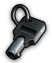
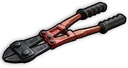
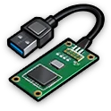
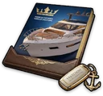

ROB RUN keys: what each one opens
Looty Bay has 14 Safe Keys, 13 Room Keys and 6 special keys and cards for the most valuable rooms. You find keys in the city or get them by bartering with Lenny. Picking up a key marks its lock on your map. Only Criminals can use keys, so put your mask on first.
Updated . The game is in Early Access and changes every week.
How keys work
- Keys that unlock small safes and locked doors can be found all over the city. Valuable loot is often kept behind the locks.
- Picking up a key marks its lock on your map. The key's description also says what it opens.
- Only Criminals can use keys.
- Behind the suspicious door at Lenny's Motel there's a barter: trade your finds for drills, keys and other heist tools.
Safe Keys
 All 14 are called “Safe Key”. The key's description says which safe it opens:
All 14 are called “Safe Key”. The key's description says which safe it opens:
| District | What it opens |
|---|---|
| Sunny Beach | Opens the safe in the Seasons Hotel in Sunny Beach. |
| Sunny Beach | Opens the safe in the Reef Hotel in Sunny Beach. |
| Sunny Beach | Opens the safe in the Pharmacy in Sunny Beach. |
| Sunny Beach | Opens the safe in the Café on the pier in Sunny Beach. |
| Sunny Beach | Opens the safe in the Convenience Store in Sunny Beach. |
| Sunny Beach | Opens the safe in the Electronics Store in Sunny Beach. |
| Downtown | Opens the safe in the Convenience Store in Northern Downtown. |
| Downtown | Opens the safe in the Convenience Store in Central Downtown. |
| Downtown | Opens the safe in the Pharmacy in Downtown. |
| Downtown | Opens the safe in the Café in Downtown. |
| Downtown | Opens the safe in the Gas Station in Downtown. |
| Loraine Hills | Opens the safe in the Mansion in Loraine Hills. |
| Loraine Hills | Opens the safe in one of the Cottages in Loraine Hills. |
| — | Opens the safe in the Strip Club. |
Room Keys
 All 13 are called “Room Key”. The description says which room it opens:
All 13 are called “Room Key”. The description says which room it opens:
| District | What it opens |
|---|---|
| Sunny Beach | Opens the locked room in the Gun Shop in Sunny Beach. |
| Sunny Beach | Opens the locked room in the Equipment Store in Sunny Beach. |
| Sunny Beach | Opens the locked room in the Pharmacy in Sunny Beach. |
| Sunny Beach | Opens the locked room in the Convenience Store in Sunny Beach. |
| Sunny Beach | Opens the locked room in one of the Hotels in Sunny Beach. |
| Downtown | Opens the locked room in the Gun Shop in Downtown. |
| Downtown | Opens the locked room in the Equipment Store in Downtown. |
| Downtown | Opens the left hidden room in the Gas Station in Downtown. |
| Downtown | Opens the right hidden room in the Gas Station in Downtown. |
| Downtown | Opens the locked room in the Pharmacy in Downtown. |
| Downtown | Opens the locked room in the Convenience Store in Downtown. |
| Loraine Hills | Opens the locked room in one of the Cottages in Loraine Hills. |
| — | Opens the VIP room in the Strip Club. |
Keycards and special keys
 Grand Hotel: secret warehouse
Grand Hotel: secret warehouse Police Station: locked room
Police Station: locked room Bank: gold vault ID Card
Bank: gold vault ID CardSix special keys and cards open the most valuable rooms in town:
| District | What it opens |
|---|---|
| Sunny Beach | Opens the secret warehouse in the Grand Hotel in Sunny Beach. |
| Downtown | Opens the gold vault in the Bank. |
| Loraine Hills | Opens the locked room in one of the Cottages in Loraine Hills. |
| Palmside | Opens the locked room in the Police Station. |
| Palmside | Opens the armory in the Police Station. |
| Palmside | Opens the vault in the Gallery. |
How to get the Drill and the gold vault ID Card
- Unlock locked rooms and hack the computers inside: that fills the USB Hacking Tool.
- Barter a full USB Hacking Tool for a Drill, or sell it.
- The Bank Vault only opens with a Drill. It works slowly and loudly, and as soon as it's placed the whole of Looty Bay knows.
- Every deposit box you crack fills the Deposit Box Keys. Full keys are bartered for the gold vault ID Card or sold.
Lockpicks, the Master Key and other tools
 LockpickAllows you to unlock doors and containers without setting off the alarm, as well as unlock someone else's trunk.
LockpickAllows you to unlock doors and containers without setting off the alarm, as well as unlock someone else's trunk.
Master KeyA key to access other players' protected storages. Trunk LockpickA tool for breaking open the trunk of someone else's vehicle.
Trunk LockpickA tool for breaking open the trunk of someone else's vehicle. DrillA tool for breaking into Bank Vaults. Takes a lot of time to do its job and is very noisy.
DrillA tool for breaking into Bank Vaults. Takes a lot of time to do its job and is very noisy. Mini DrillCompact and precise. Quickly cracks safe locks.
Mini DrillCompact and precise. Quickly cracks safe locks.
Bolt CutterCan be used to cut the power line in a settlement.
USB Hacking ToolFilled by hacking computers in locked rooms. When full, can be bartered or sold for a good price. Deposit Box KeysFilled by cracking deposit boxes. When full, can be bartered for the bank's gold vault's ID Card or sold for a good price.
Deposit Box KeysFilled by cracking deposit boxes. When full, can be bartered for the bank's gold vault's ID Card or sold for a good price.
Yacht KeyAccess to a floating palace. I can't steal a yacht, but those who can will pay a fortune for this key.
FAQ
How do I use a key in ROB RUN?
Put your mask on: only Criminals can use keys. Picking up a key marks its lock on your map, and the key's description says what it opens.
Where do I get keys?
Keys turn up in the city with the rest of the loot. Keys and tools also come from the barter behind the suspicious door at Lenny's Motel.
What does the Keycard open?
The Keycard opens the secret warehouse in the Grand Hotel in Sunny Beach. The other special keys open the Police Station's locked room and armory, the Gallery vault, the bank's gold vault and a room in a Loraine Hills cottage.
How do I open the Bank Vault?
Only with a Drill, which you get by bartering a full USB Hacking Tool. The Drill works slowly and loudly, and all of Looty Bay learns when it's placed.
Lockpick or Master Key: what's the difference?
The Lockpick opens doors and containers without the alarm, and other people's trunks. The Master Key opens other players' protected storage: the safes and racks at their bases.
More on ROB RUN
- Looty Bay map
- Beginner guide
- Bank account and laundering
- What to do with cargo
- How to become a cop
- Decoder calculator
- Guides
Key and tool lists, names, descriptions and pictures: the game files (24 Nov 2026).